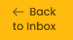

<div class="sidenav-inbox" [ngClass]="collapsed ? 'sidenav-collapsed' : ''">
  <div class="logo-container">
    <div style="width: inherit;">
      <button class="logo-back" *ngIf="collapsed">
        <div style="width: 100%;display: flex; justify-content: center;" *ngIf="collapsed" [routerLink]="['/inbox/home']">
            
        </div>
      </button>
    </div>
    <div *ngIf="!collapsed">
      <button class="logo" [routerLink]="['/inbox/home']">
        <div style="width: fit-content" >
          <mat-icon style="color: #000;text-align: left;">arrow_back</mat-icon>
        </div>
        <div style="width: fit-content" *ngIf="collapsed">
        </div>
      </button>
    </div>
  </div>
  <div style="height: 80%;">
  <ul class="sidenav-nav">
    <li class="sidenav-nav-item" *ngFor="let data of navData">
      <a
    class="sidenav-nav-link"
    [routerLink]="[data.routeLink]"
    routerLinkActive="active"
    ariaCurrentWhenActive="page"
    [routerLinkActiveOptions]="{ exact: false }"
    queryParamsHandling="preserve"
  >
  <div class="summary_menu">
        
    
    <br>
    <span class="sidenav-link-text" @fadeInOut *ngIf="collapsed">
      {{ data.label }}
    </span>
    </div>
  </a>
    </li>
  </ul>
</div>
  <div class="close-container">
    <button class="logo" (click)="toggleCollapse()">
        
      </button>
  </div>
</div>
